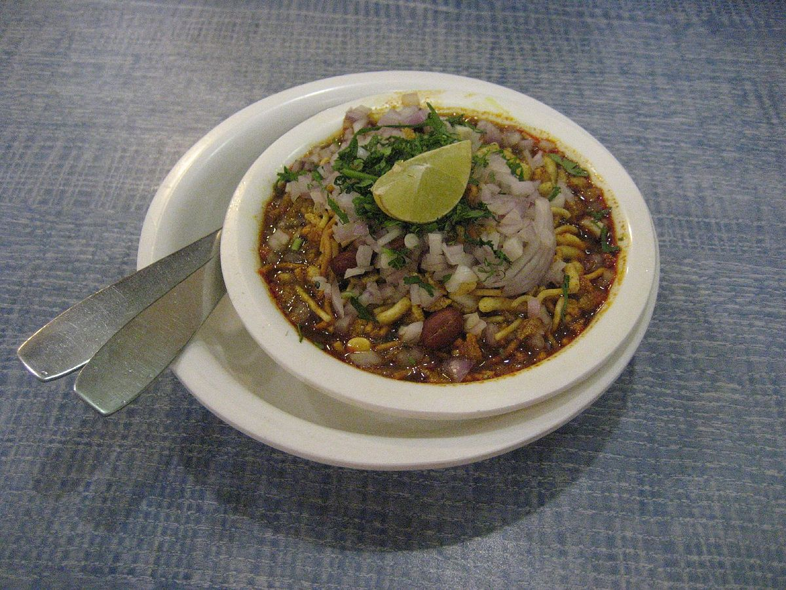
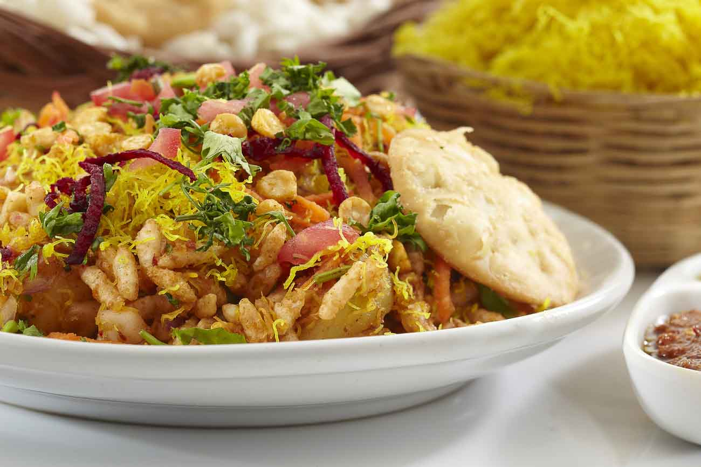
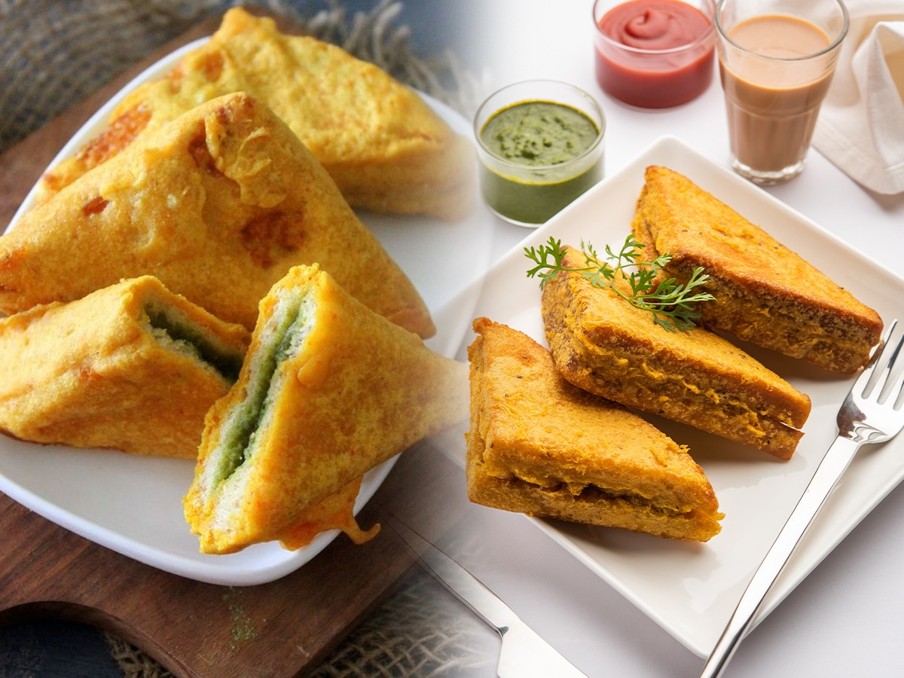

| Image | Dish | Popular Area | Description | Price |
|---|---|---|---|---|
|  | Misal Pav | Tulshibaug | Spicy curry with sprouts served with pav | ₹40 - ₹60 |
|  | Bhel Puri | JM Road | Puffed rice mix with tangy tamarind chutney | ₹20 - ₹40 |
|  | Batata Pattice | Kothrud | Potato patty with spicy filling | ₹25 - ₹35 |
 |
Pani Puri | MG Road | Crispy puris filled with spicy & tangy water | ₹20 - ₹30 |
 |
Samosa | Camp | Fried pastry with potato and peas filling | ₹15 - ₹25 |